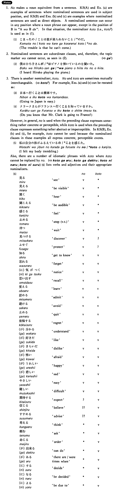

←
DoJG
→
の (3)
(B. 318)
Example sentences
(ksa).
日本語を教える
の
は難しい・難しいです。
Teaching Japanese is difficult.
(ksb).
私は雪子さんがビールを飲む
の
を見た・見ました。
I saw Yukiko drink beer.
(a).
日本へ行く
の
は簡単です。
Going to Japan is easy.
(b).
私は小林さんがピアノを弾いている
の
を聞いた。
I heard Ms. Kobayashi playing the piano.
(c).
クラークさんがフランスへ行く
の
を知っていますか。
Do you know that Mr. Clark is going to France?
Formation
(i)
{V/Adjective い} informal
の
{話す /話した}
の
Someone (will) talk/talked
{高い /高かった}
の
Something is/was expensive
(ii)
{Adjective な/N}
{
な
/
だった
}
の
{静か
な
/静か
だった
}
の
Something is/was quiet
{先生
な
/先生
だった
}
の
Someone is/was a teacher
